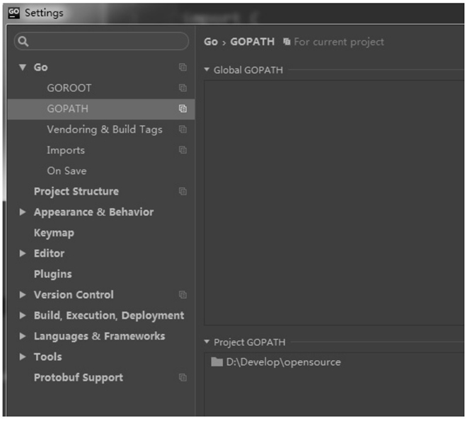

首页 > Go语言 > Go语言包（package）
Go语言GOPATH详解（Go语言工作目录）
GOPATH 是 Go语言中使用的一个环境变量，它使用绝对路径提供项目的工作目录。
工作目录是一个工程开发的相对参考目录，好比当你要在公司编写一套服务器代码，你的工位所包含的桌面、计算机及椅子就是你的工作区。工作区的概念与工作目录的概念也是类似的。如果不使用工作目录的概念，在多人开发时，每个人有一套自己的目录结构，读取配置文件的位置不统一，输出的二进制运行文件也不统一，这样会导致开发的标准不统一，影响开发效率。
GOPATH 适合处理大量 Go语言源码、多个包组合而成的复杂工程。
从命令行输出中，可以看到 GOPATH 设定的路径为：/home/davy/go（davy 为笔者的用户名）。
在 Go 1.8 版本之前，GOPATH 环境变量默认是空的。从 Go 1.8 版本开始，Go 开发包在安装完成后，将 GOPATH 赋予了一个默认的目录，参见下表。
如果需要将整个源码添加到版本管理工具（Version Control System，VCS）中时，只需要添加 $GOPATH/src 目录的源码即可。bin 和 pkg 目录的内容都可以由 src 目录生成。
使用 export 指令可以将当前目录的值设置到环境变量 GOPATH中。
在命令行中执行如下指令编译源码：
在 bin 目录中执行 ./hello，命令行输出如下：
hello world
比如说，将某项目代码保存在 /home/davy/projectA 目录下，将该目录设置为 GOPATH。随着开发进行，需要再次获取一份工程项目的源码，此时源码保存在 /home/davy/projectB 目录下，如果此时需要编译 projectB 目录的项目，但开发者忘记设置 GOPATH 而直接使用命令行编译，则当前的 GOPATH 指向的是 /home/davy/projectA 目录，而不是开发者编译时期望的 projectB 目录。编译完成后，开发者就会将错误的工程版本发布到外网。
因此，建议大家无论是使用命令行或者使用集成开发环境编译 Go 源码时，GOPATH 跟随项目设定。在 Jetbrains 公司的 GoLand 集成开发环境（IDE）中的 GOPATH 设置分为全局 GOPATH 和项目 GOPATH，如下图所示。
图中的 Global GOPATH 代表全局 GOPATH，一般来源于系统环境变量中的 GOPATH；Project GOPATH 代表项目所使用的 GOPATH，该设置会被保存在工作目录的 .idea 目录下，不会被设置到环境变量的 GOPATH 中，但会在编译时使用到这个目录。建议在开发时只填写项目 GOPATH，每一个项目尽量只设置一个 GOPATH，不使用多个 GOPATH 和全局的 GOPATH。
Go语言中的 GOPATH 也是一种类似全局包含的设计，因此鉴于 Visual Studio 在设计上的失误，建议开发者不要设置全局的 GOPATH，而是随项目设置 GOPATH。
工作目录是一个工程开发的相对参考目录，好比当你要在公司编写一套服务器代码，你的工位所包含的桌面、计算机及椅子就是你的工作区。工作区的概念与工作目录的概念也是类似的。如果不使用工作目录的概念，在多人开发时，每个人有一套自己的目录结构，读取配置文件的位置不统一，输出的二进制运行文件也不统一，这样会导致开发的标准不统一，影响开发效率。
GOPATH 适合处理大量 Go语言源码、多个包组合而成的复杂工程。
提示
C、C++、Java、C# 及其他语言发展到后期，都拥有自己的 IDE（集成开发环境），并且工程（Project）、解决方案（Solution）和工作区（Workspace）等概念将源码和资源组织了起来，方便编译和输出。使用命令行查看GOPATH信息
在《安装Go语言开发包》一节中我们已经介绍过 Go语言的安装方法。在安装过 Go 开发包的操作系统中，可以使用命令行查看 Go 开发包的环境变量配置信息，这些配置信息里可以查看到当前的 GOPATH 路径设置情况。在命令行中运行go env后，命令行将提示以下信息：
$ go env
GOARCH="amd64"
GOBIN=""
GOEXE=""
GOHOSTARCH="amd64"
GOHOSTOS="linux"
GOOS="linux"
GOPATH="/home/davy/go"
GORACE=""
GOROOT="/usr/local/go"
GOTOOLDIR="/usr/local/go/pkg/tool/linux_amd64"
GCCGO="gccgo"
CC="gcc"
GOGCCFLAGS="-fPIC -m64 -pthread -fmessage-length=0"
CXX="g++"
CGO_ENABLED="1"
CGO_CFLAGS="-g -O2"
CGO_CPPFLAGS=""
CGO_CXXFLAGS="-g -O2"
CGO_FFLAGS="-g -O2"
CGO_LDFLAGS="-g -O2"
PKG_CONFIG="pkg-config"
- 第 1 行，执行 go env 指令，将输出当前 Go 开发包的环境变量状态。
- 第 2 行，GOARCH 表示目标处理器架构。
- 第 3 行，GOBIN 表示编译器和链接器的安装位置。
- 第 7 行，GOOS 表示目标操作系统。
- 第 8 行，GOPATH 表示当前工作目录。
- 第 10 行，GOROOT 表示 Go 开发包的安装目录。
从命令行输出中，可以看到 GOPATH 设定的路径为：/home/davy/go（davy 为笔者的用户名）。
在 Go 1.8 版本之前，GOPATH 环境变量默认是空的。从 Go 1.8 版本开始，Go 开发包在安装完成后，将 GOPATH 赋予了一个默认的目录，参见下表。
| 平 台 | GOPATH 默认值 | 举 例 |
|---|---|---|
| Windows 平台 | %USERPROFILE%/go | C:\Users\用户名\go |
| Unix 平台 | $HOME/go | /home/用户名/go |
使用GOPATH的工程结构
在 GOPATH 指定的工作目录下，代码总是会保存在 $GOPATH/src 目录下。在工程经过 go build、go install 或 go get 等指令后，会将产生的二进制可执行文件放在 $GOPATH/bin 目录下，生成的中间缓存文件会被保存在 $GOPATH/pkg 下。如果需要将整个源码添加到版本管理工具（Version Control System，VCS）中时，只需要添加 $GOPATH/src 目录的源码即可。bin 和 pkg 目录的内容都可以由 src 目录生成。
设置和使用GOPATH
本节以 Linux 为演示平台，为大家演示使用 GOPATH 的方法。1) 设置当前目录为GOPATH
选择一个目录，在目录中的命令行中执行下面的指令：export GOPATH=`pwd`
该指令中的 pwd 将输出当前的目录，使用反引号`将 pwd 指令括起来表示命令行替换，也就是说，使用`pwd`将获得 pwd 返回的当前目录的值。例如，假设你的当前目录是“/home/davy/go”，那么使用`pwd`将获得返回值“/home/davy/go”。使用 export 指令可以将当前目录的值设置到环境变量 GOPATH中。
2) 建立GOPATH中的源码目录
使用下面的指令创建 GOPATH 中的 src 目录，在 src 目录下还有一个 hello 目录，该目录用于保存源码。mkdir -p src/hello
mkdir 指令的 -p 可以连续创建一个路径。3) 添加main.go源码文件
使用 Linux 编辑器将下面的源码保存为 main.go 并保存到 $GOPATH/src/hello 目录下。
package main
import "fmt"
func main(){
fmt.Println("hello")
}
4) 编译源码并运行
此时我们已经设定了 GOPATH，因此在 Go语言中可以通过 GOPATH 找到工程的位置。在命令行中执行如下指令编译源码：
go install hello
编译完成的可执行文件会保存在 $GOPATH/bin 目录下。在 bin 目录中执行 ./hello，命令行输出如下：
hello world
在多项目工程中使用GOPATH
在很多与 Go语言相关的书籍、文章中描述的 GOPATH 都是通过修改系统全局的环境变量来实现的。然而，根据笔者多年的 Go语言使用和实践经验及周边朋友、同事的反馈，这种设置全局 GOPATH 的方法可能会导致当前项目错误引用了其他目录的 Go 源码文件从而造成编译输出错误的版本或编译报出一些无法理解的错误提示。比如说，将某项目代码保存在 /home/davy/projectA 目录下，将该目录设置为 GOPATH。随着开发进行，需要再次获取一份工程项目的源码，此时源码保存在 /home/davy/projectB 目录下，如果此时需要编译 projectB 目录的项目，但开发者忘记设置 GOPATH 而直接使用命令行编译，则当前的 GOPATH 指向的是 /home/davy/projectA 目录，而不是开发者编译时期望的 projectB 目录。编译完成后，开发者就会将错误的工程版本发布到外网。
因此，建议大家无论是使用命令行或者使用集成开发环境编译 Go 源码时，GOPATH 跟随项目设定。在 Jetbrains 公司的 GoLand 集成开发环境（IDE）中的 GOPATH 设置分为全局 GOPATH 和项目 GOPATH，如下图所示。

图：全局和项目GOPATH
图：全局和项目GOPATH
图中的 Global GOPATH 代表全局 GOPATH，一般来源于系统环境变量中的 GOPATH；Project GOPATH 代表项目所使用的 GOPATH，该设置会被保存在工作目录的 .idea 目录下，不会被设置到环境变量的 GOPATH 中，但会在编译时使用到这个目录。建议在开发时只填写项目 GOPATH，每一个项目尽量只设置一个 GOPATH，不使用多个 GOPATH 和全局的 GOPATH。
提示
Visual Studio 早期在设计时，允许 C++ 语言在全局拥有一个包含路径。当一个工程多个版本的编译，或者两个项目混杂有不同的共享全局包含时，会发生难以察觉的错误。在新版本 Visual Studio 中已经废除了这种全局包含的路径设计，并建议开发者将包含目录与项目关联。Go语言中的 GOPATH 也是一种类似全局包含的设计，因此鉴于 Visual Studio 在设计上的失误，建议开发者不要设置全局的 GOPATH，而是随项目设置 GOPATH。
关注公众号「站长严长生」，在手机上阅读所有教程，随时随地都能学习。内含一款搜索神器，免费下载全网书籍和视频。

微信扫码关注公众号